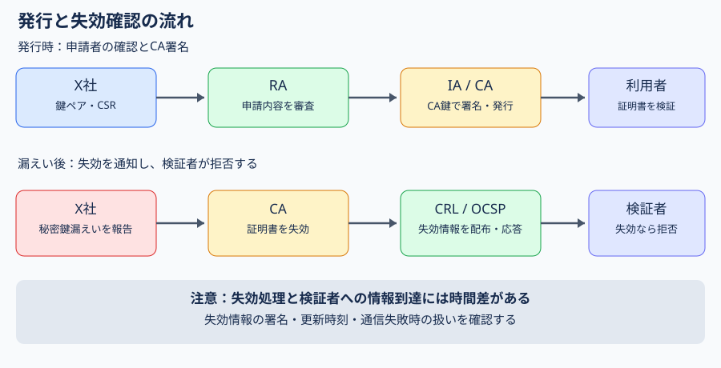

第50講｜CA・RA・CRL・OCSP
1. 到達目標・参考書・優先度
到達目標：認証局CAと登録局RA・発行局IAの役割を区別し、証明書発行から失効までの処理を追える。CRLとOCSPの取得・検証・更新間隔・応答不能時の限界を説明し、科目Bのログ・障害事例で根拠ある対策を選べる。
参考書を実際に確認：『徹底攻略 情報処理安全確保支援士教科書 令和7年度版』第4章4-2-2「PKI」、印刷p.275（CA/RA/IA）、p.276〜277（証明書発行と検証、失効リスト）、p.278（VA、OCSP）、p.279（証明書エラー）。これらの基礎用語・役割は参考書に基づく。以下の失効情報の配布時差、OCSP応答の厳密な意味、soft-fail/hard-fail、OCSP stapling、架空ログと答案は講師独自の補足であり、IPA過去問に実際に照合したという主張はしない。
優先度：A必須75%、B理解補助20%、C発展5%。第48・49講の証明書の構造の説明は必要な部分だけ再確認し、本講では誰が発行を許可し、誰が失効を伝え、利用者が何を判断できるかに重点を置く。
2. なぜ発行と失効の両方が必要なのか【A】
例えば会社XのWebサイト login.example.test が、証明書を見せて「私が本物です」と主張する。公開鍵を見せるだけなら攻撃者も自分の鍵を見せられる。そこで、認証局（CA）が審査した名前と公開鍵の結び付きを署名付き証明書で示す。
しかし、昨日は正当だった証明書が今日も正当とは限らない。証明書の秘密鍵が盗まれた場合、期限が残っていても攻撃者が同じ証明書と秘密鍵を使って偽サーバになりすます恐れがある。証明書の発行時の審査と、発行後に信用を取り消す失効は別の仕事である。
重要な区別：証明書の署名検証は「信頼できるCAがその内容に署名したか」を調べる。失効確認は「発行後に利用を取り消されていないか」を調べる。さらに名前（SAN）、有効期間、用途なども別途確認する。OCSPがgoodでも、署名・名前の確認が不要になるわけではない。
3. CA・RA・IA・VA：誰が何をするか【A】
CA（Certificate Authority、認証局）は証明書の発行・失効を管理する信頼主体。証明書に署名するCA秘密鍵の保護は極めて重要で、これが侵害されれば不正証明書発行の危険が生じる。
RA（Registration Authority、登録局）は証明書の申請を受け付け、申請者の資格・対象ドメインの管理権限などを確認し、発行してよいか審査する。RAが審査したからといって、RAが必ずCA署名を作るわけではない。
IA（Issuing Authority、発行局）は実際に証明書を発行し、CAの運用の中で署名を実施する役割。RAとIAは論理的な役割の区別であり、組織によって別部門・別システムとは限らない。
VA（Validation Authority、検証局）は参考書p.278で証明書の有効性確認を専門とする機関として説明される。CAの発行業務とは区別する。実際の失効照会ではOCSPレスポンダなどが応答するが、VAとOCSPレスポンダを常に同一組織・装置と決め付けない。
| 役割 | 主な仕事 | 混同しない点 |
|---|---|---|
| CA | 発行・失効の信頼主体、CA署名 | サイトの内容の安全までは保証しない |
| RA | 申請者・権限の確認、登録審査 | 証明書に署名するとは限らない |
| IA | 証明書の発行・署名の実施 | CAの内部役割として説明される |
| VA | 証明書の有効性確認 | 発行主体とは区別 |
| OCSPレスポンダ | 指定された証明書の状態を応答 | 署名・名前・用途の全検証を代行するわけではない |
発行の正常な流れ
- X社がサーバの鍵ペアを生成し、秘密鍵を自社で保管する。公開鍵と対象名を含むCSR（証明書署名要求）を用意する。
- RAが
login.example.testの管理権限などを審査する。単にCSRに名前が書かれているだけでは審査の代わりにならない。 - IAがCA側の秘密鍵で証明書に署名し、X社に発行する。サーバの秘密鍵をCAに送る必要は通常ない。
- X社は証明書・秘密鍵・必要な中間CA証明書をサーバに設定する。
- ブラウザはCAの署名・信頼連鎖、接続先名、期間、用途などを確認し、必要な失効確認も行う。
攻撃が起こる条件：RAのドメイン確認が破られれば、攻撃者に正しい名前の証明書が発行される可能性がある。CA署名鍵が漏えいすれば不正発行の危険がある。防御は申請審査の強化、CA鍵の厳格管理、発行監査、不正発行の検知と失効などを組み合わせる。証明書が発行されたという事実だけで運営者の善意は保証されない。
4. CRL：失効済み証明書の一覧を取得する【A】
CRL（Certificate Revocation List、証明書失効リスト）はCAが署名して発行する、失効した証明書の識別情報などの一覧。参考書p.277は、証明書のシリアル番号と失効日時を記すものとして説明する。
例：CAがシリアル番号 04:2A の証明書を発行した後、その秘密鍵が漏えいした。管理者がCAに失効を申請し、CAは失効処理を行ってCRLに掲載する。ブラウザ等の検証者は発行元CAに対応するCRLを取得し、CAの署名や更新情報を確認して、04:2A が載っていればその証明書を受け入れない。
Issuer: Example Intermediate CA
This Update: 2026-11-18 08:00 UTC
Next Update: 2026-11-19 08:00 UTC
Revoked Certificates:
Serial Number: 04:2A
Revocation Date: 2026-11-18 07:30 UTC
Signature: (発行CAによる署名)これは架空のCRL表示例。シリアル番号は発行者と組み合わせて識別する。別CAが偶然同じ番号を使っていても同じ証明書ではない。
CRLの弱点は何か
CRLを毎日更新する運用なら、失効直後に利用者が古いCRLを保持している可能性がある。失効がCAで処理されても、検証者に新しい失効情報が届くまで時間差がある。失効リストが大きくなると取得・配布負荷も増える。
したがって「CRLに載っていない」ことは、取得したCRLの情報にその番号がないという意味であり、証明書が必ず安全だという保証ではない。CRLの署名・発行元・更新時刻・次回更新時刻を確認することが大切である。
5. OCSP：証明書を指定して状態を問い合わせる【A】
OCSP（Online Certificate Status Protocol）は、証明書の失効状態をオンラインで問い合わせるためのプロトコル。参考書p.278は、主にHTTPを使い、OCSPレスポンダが署名付きで応答する方式として説明する。
検証者は対象証明書を識別する情報（発行者の識別情報、シリアル番号など）を指定して問い合わせる。レスポンダは典型的に次の状態を返す。
| 応答 | 読み方 | 誤解してはいけないこと |
|---|---|---|
good | レスポンダの扱う情報上、対象が失効と認識されていない | 証明書の名前・用途・発行の正当性まで保証するわけではない |
revoked | 失効していると応答された | 有効期限が残っていても受け入れない |
unknown | 対象証明書の状態を判断できない | 「安全」と同義ではない |
重要：OCSPのgoodは「その証明書が正しく発行された」「本人の証明書である」という全面的な保証ではない。レスポンダが署名した応答そのものの正当性や時刻の新しさも確認する。
OCSP照会の処理順序
- ブラウザがWebサーバの証明書を受け取る。
- 証明書の発行元や識別情報を使い、適切なOCSPレスポンダへ問い合わせる（実装・ポリシーにより照会しない場合もある）。
- レスポンダが署名付きの状態応答を返す。
- ブラウザが応答の署名、対象証明書との対応、時刻の妥当性を確認する。
revokedなら拒否する。goodなら他の証明書検証も含めて判断する。unknownや応答不能時はクライアントの規則によって扱いが変わる。
OCSPとCRLの比較：CRLはリストを配布し、検証者が手元で照合する。OCSPは対象を指定して状態応答を得る。どちらも「失効情報の新鮮さ」と「取得できないときの扱い」に限界がある。どちらか一方を使えば全ての攻撃を防げるわけではない。
6. 通信できない場合：soft-failとhard-fail【A/B】
OCSPレスポンダが停止し、利用者が状態を確認できないとする。soft-failは「失効情報が取れないことだけを理由には接続を止めず、他の検証が通れば続ける」動作。利点は可用性だが、失効した証明書を見逃す危険がある。
hard-failは「失効状態を確認できない場合、接続を拒否する」動作。失効を確認できない接続を通さない一方、レスポンダ障害や通信遮断で正当な利用者まで接続できなくなる。
例えば攻撃者がOCSPへの通信だけを妨害できる場合、soft-failでは失効確認が行えず、失効済み証明書を受け入れる危険がある。hard-failでは可用性への攻撃につながる。実際のブラウザは必ずどちらか一律で動くわけではない。製品・設定・証明書の拡張・失効情報の配布方法に依存する。
OCSP stapling（OCSPステープリング）はサーバが取得した署名付きOCSP応答をTLS接続時に提示する仕組みで、クライアントが毎回レスポンダへ直接照会する必要を減らせる。ただし提示した応答の署名・期限・対象証明書の照合は必要であり、staplingを使えば失効問題が全て解決するわけではない。
7. 失効処理の全体像と障害の切り分け【A】
次の図は、発行時の役割と、漏えい後にCRL/OCSPで失効を伝える流れを示す。

図の上段はX社→RAの申請審査→IA/CAの署名→X社への証明書発行。下段は漏えいの報告→CAによる失効処理→CRL配布・OCSP応答→検証者の拒否である。失効情報をCAが更新したことと、すべての検証者が直ちに把握したことは同じではない。
架空ログを読む
08:00 CA revoke serial=04:2A status=COMPLETED
08:01 ClientA revocation=CRL serial=04:2A crl_thisUpdate=07:00 result=NOT_LISTED
08:04 ClientB revocation=OCSP serial=04:2A status=REVOKED result=BLOCK
08:06 ClientC revocation=OCSP serial=04:2A error=TIMEOUT policy=SOFT_FAIL result=CONTINUE確認できる事実：CAは08:00に失効処理完了を記録。ClientAは07:00更新のCRLで番号を見つけられなかった。ClientBはOCSPで失効を受け取り拒否。ClientCはOCSPタイムアウト時のsoft-failで接続を続行した。
断定できないこと：ClientAが見た証明書が確実に安全だったか、ClientCの接続先が攻撃者だったか、タイムアウトの原因が攻撃か単なる障害か。これらはログだけでは確定しない。
調査：CRLの更新・配布時刻、クライアントが取得したCRLの発行元と署名、OCSP応答の署名と時刻、ClientCのポリシー、接続先の証明書シリアル番号・発行元・アクセスログを照合する。
対策：失効情報を適切な頻度で配布・取得する。業務リスクに応じて失効確認不能時のポリシーを設計し、レスポンダの冗長化・監視を行う。秘密鍵漏えい時は失効だけでなく鍵ペア交換も必要。検証を無効化することは対策ではない。
8. 科目A・科目Bでの判断【A】
科目Aで混同しやすいのは、RAは審査、IAは発行、CAは信頼主体、CRLは失効一覧、OCSPは対象を指定する照会、失効と期限切れは異なる、OCSP goodは万能な安全証明ではないという点。
科目Bの答案例
設問：「サーバ証明書の秘密鍵漏えいにより08:00に失効処理を完了した。ClientAは07:00更新のCRLで失効を検出できず接続を許可した。原因と対策を説明せよ。」
事実：失効処理完了08:00、ClientAのCRL更新時刻07:00、接続許可。原因：ClientAが失効前の情報しか持っておらず、失効済みシリアル番号を検出できない。影響：失効済み証明書を使用した接続を受け入れる危険がある。対策と理由：CRL更新・配布・取得の運用を改善し、新しい失効情報を確認できるようにする。高リスク用途では失効状態が確認できないときの接続許可条件を厳格化する。
答案例：「ClientAが失効処理前に更新されたCRLを参照しているため、失効済みシリアル番号を検出できない。CRLの更新・配布とクライアントの取得を適切に管理し、新しい失効情報で検証させる。」
別設問で「OCSPレスポンダ障害中にsoft-failで接続が許可された」とあれば、レスポンダが応答不能だった事実と、証明書が失効していたかどうかは不明という点を区別する。
9. 整理・発展学習
A必須：CA/RA/IAの分担、秘密鍵の保護、失効処理、CRLのシリアル番号照合、OCSPのgood/revoked/unknown、署名と応答時刻、失効確認失敗時のリスク、ログの事実と推測。
B理解補助：VA、CRLの更新間隔、soft-fail/hard-fail、OCSP staplingの狙いと限界。
C発展・任意：デルタCRL、OCSP nonce、レスポンダ委任証明書、証明書透明性（CT）との詳細な運用連携。